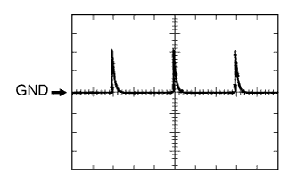

СИСТЕМА ПОСАДКИ И ЗАПУСКА (для моделей с функцией посадки) > КОНТАКТЫ ЭБУ |
| ПРОВЕРЬТЕ ЭБУ СЕРТИФИКАЦИИ |
Отсоедините разъем G38 ЭБУ.
Измерьте напряжение и сопротивление в соответствии со значениями, приведенными в таблице.
| Номера контактов (обозначения) | Цвет проводки | Описание контактов | Условие | Заданные условия |
| G38-1 (+B) - G38-15 (E) | V - W-B | +B источника питания | Всегда | 11 – 14 В |
| G38-15 (E) - масса | W-B - масса | Масса | Всегда | Менее 1 Ом |
| G38-16 (IG) - G38-15 (E) | W - W-B | Источник питания IG | Зажигание выключено → включено (IG) | Менее 1 В → 11-14 В |
| G38-17 (CUTB) - G38-15 (E) | L - W-B | +B источника питания | Всегда | 11-14 В |
Снова подсоедините разъем G38 ЭБУ.
Измерьте напряжение в соответствии со значениями, приведенными в таблице.
| Номера контактов (обозначения) | Цвет проводки | Описание контактов | Условие | Заданные условия |
| G38-3 (CLG1) - G38-15 (E) | R - W-B | Сигнал датчика антенны электронного ключа (со стороны водителя) | Зажигание выключено, все двери закрыты, ключ находится вне салона и выключатель LOCK (БЛОКИР) передатчика не нажат → нажат | Импульсы не формируются → Импульсы формируются |
| G38-4 (CG1B) - G38-15 (E) | G - W-B | Сигнал датчика антенны электронного ключа (со стороны водителя) | Зажигание выключено, все двери закрыты, ключ находится вне салона и выключатель LOCK (БЛОКИР) передатчика не нажат → нажат | Импульсы не формируются → Импульсы формируются |
| G38-5 (CLG2) - G38-15 (E) | B - W-B | Сигнал датчика антенны электронного ключа (со стороны переднего пассажира) | Зажигание выключено, все двери закрыты, ключ находится вне салона и выключатель LOCK (БЛОКИР) передатчика не нажат → нажат | Импульсы не формируются → Импульсы формируются |
| G38-6 (CG2B) - G38-15 (E) | W - W-B | Сигнал датчика антенны электронного ключа (со стороны переднего пассажира) | Зажигание выключено, все двери закрыты, ключ находится вне салона и выключатель LOCK (БЛОКИР) передатчика не нажат → нажат | Импульсы не формируются → Импульсы формируются |
| G38-7 (CLG5) - G38-15 (E) | R - W-B | Сигнал датчика внутренней антенны электронного ключа № 1 (в переднем полу) | Зажигание выключено, все двери закрыты, ключ находится вне салона, и датчик блокировки выключен → включен | Импульсы не формируются → Импульсы формируются |
| G38-8 (CG5B) - G38-15 (E) | W - W-B | Сигнал датчика внутренней антенны электронного ключа № 1 (в переднем полу) | Зажигание выключено, все двери закрыты, ключ находится вне салона, и датчик блокировки выключен → включен | Импульсы не формируются → Импульсы формируются |
| G38-18 (TSW1) - G38-15 (E) | LG - W-B | Сигнал обнаружения датчика блокировки системы посадки (со стороны водителя) | Зажигание выключено, все двери закрыты, и датчик блокировки (со стороны водителя) выключен → включен | Импульсы формируются → Менее 2 В |
| G38-19 (TSW2) - G38-15 (E) | V - W-B | Сигнал обнаружения датчика блокировки системы посадки (со стороны переднего пассажира) | Зажигание выключено, все двери закрыты, и датчик блокировки (со стороны переднего пассажира) выключен → включен | Импульсы формируются → Менее 2 В |
| G38-20 (SEN1) - G38-15 (E) | W - W-B | Сигнал обнаружения датчика разблокировки системы посадки (со стороны водителя) | Зажигание выключено, все двери заблокированы, ключ находится недостаточно близко к автомобилю, и датчик разблокировки (со стороны водителя) выключен → включен | Импульсы формируются → Менее 2 В |
| G38-21 (SEN2) - G38-15 (E) | L - W-B | Сигнал обнаружения датчика разблокировки системы посадки (со стороны переднего пассажира) | Зажигание выключено, все двери заблокированы, ключ находится недостаточно близко к автомобилю, и датчик разблокировки (со стороны переднего пассажира) выключен → включен | Импульсы формируются → Менее 2 В |
| G38-22 (TSW5) - масса | G - масса | Сигнал выключателя электронного ключа багажного отделения | Выключатель разблокировки выключен → включен | Импульсы формируются → Менее 1 В |
| G38-23 (TSW6) - масса | L - масса | Сигнал выключателя электронного ключа багажного отделения | Выключатель блокировки выключен → включен | Импульсы формируются → Менее 1 В |
| G38-24 (CLG6) - G38-15 (E) | Y - W-B | Сигнал датчика внутренней антенны электронного ключа № 2 (в заднем полу) | Зажигание выключено, все двери закрыты, ключ находится вне салона, и датчик блокировки выключен → включен | Импульсы не формируются → Импульсы формируются |
| G38-25 (CG6B) - G38-15 (E) | W - W-B | Сигнал датчика внутренней антенны электронного ключа № 2 (в заднем полу) | Зажигание выключено, все двери закрыты, ключ находится вне салона, и датчик блокировки выключен → включен | Импульсы не формируются → Импульсы формируются |
| G38-26 (CLG7) - G38-15 (E) | LG - W-B | Сигнал датчика внутренней антенны электронного ключа № 3 (внутри багажного отделения) | Зажигание выключено, все двери закрыты, ключ находится вне салона, и датчик блокировки выключен → включен | Импульсы не формируются → Импульсы формируются |
| G38-27 (CG7B) - G38-15 (E) | L - W-B | Сигнал датчика внутренней антенны электронного ключа № 3 (внутри багажного отделения) | Зажигание выключено, все двери закрыты, ключ находится вне салона, и датчик блокировки выключен → включен | Импульсы не формируются → Импульсы формируются |
| G38-32 (POS1) - G38-15 (E) | R - W-B | Выходной сигнал датчика разблокировки системы посадки (со стороны водителя) | Зажигание выключено → включено (IG) | 9 - 14 В → менее 2 В |
| G38-33 (POS2) - G38-15 (E) | R - W-B | Выходной сигнал датчика разблокировки системы посадки (со стороны переднего пассажира) | Зажигание выключено → включено (IG) | 9 - 14 В → менее 2 В |
| G39-5 (RCO) - G38-15 (E) | L - W-B | Питание приемника системы управления замками дверей | Зажигание выключено, выключатель передатчика не нажат → нажат | Менее 1 В → 4,5 - 5,5 В |
| G39-15 (RDA) - G38-15 (E) | G - W-B | Сигнал входных данных приемника системы управления замками дверей | Зажигание выключено | Импульсы формируются 11 -14 В через определенные промежутки времени |
| G39-16 (RSSI) - G38-15 (E) | P - W-B | Сигнал наличия электромагнитных волн приемника системы управления замками дверей | Все двери закрыты, все двери заблокированы, выключатель передатчика не нажат → нажат | 11 - 14 В → менее 2 В |
| G39-19 (CLG8) - G38-15 (E) | B - W-B | Сигнал датчика антенны электронного ключа (снаружи багажного отделения) | Зажигание выключено, все двери закрыты, и выключатель разблокировки выключен → включен | Импульсы не формируются → Импульсы формируются |
| G39-20 (CG8B) - G38-15 (E) | W - W-B | Сигнал датчика антенны электронного ключа (снаружи багажного отделения) | Зажигание выключено, все двери закрыты, и выключатель разблокировки выключен → включен | Импульсы не формируются → Импульсы формируются |
| ПРОВЕРЬТЕ РАСПРЕДЕЛИТЕЛЬНЫЙ БЛОК СО СТОРОНЫ ВОДИТЕЛЯ И ГЛАВНЫЙ ЭБУ КУЗОВА (БОРТОВОЙ ЭБУ СЕТИ МУЛЬТИПЛЕКСНОЙ СВЯЗИ) |

| *A | Для моделей с левосторонним рулевым управлением | *B | Для моделей с правосторонним рулевым управлением |
Снимите главный ЭБУ кузова (Нажмите здесь).
Измерьте напряжение и сопротивление в соответствии со значениями, приведенными в таблице.
| Номера контактов (обозначения) | Цвет проводки | Описание контактов | Условие | Заданные условия |
| A-30 (BECU) - масса | - | Вспомогательная аккумуляторная батарея | Всегда | 11 – 14 В |
| A-31 (ALTB) - масса | - | Вспомогательная аккумуляторная батарея | Всегда | 11 – 14 В |
| A-32 (IG) - масса | - | Питание выключателя зажигания | Зажигание включено (IG) | 11 - 14 В |
| A-32 (IG) - масса | - | Питание выключателя зажигания | Зажигание выключено | Менее 1 В |
| A-29 (ACC) - масса | - | Источник питания ACC | Выключатель зажигания в положении ACC | 11 - 14 В |
| A-29 (ACC) - масса | - | Источник питания ACC | Зажигание выключено | Менее 1 В |
| A-11 (GND1) - масса | - | Масса | Всегда | Менее 1 Ом |
| G63-3 (GND2) - масса | W-B - масса | Масса | Всегда | Менее 1 Ом |
Установите главный ЭБУ кузова (Нажмите здесь).
Измерьте напряжение в соответствии со значениями, приведенными в таблице.
| Номера контактов (обозначения) | Цвет проводки | Описание контактов | Условие | Заданные условия |
| 2I-27 (FLCY) - масса*1 | R - масса | Входной сигнал выключателя освещения проема левой передней двери | Левая передняя дверь открыта | Менее 1 В |
| 2I-27 (FLCY) - масса*1 | R - масса | Входной сигнал выключателя освещения проема левой передней двери | Левая передняя дверь закрыта | 11-14 В |
| 2D-31 (FLCY) - масса*2 | R - масса | Входной сигнал выключателя освещения проема левой передней двери | Левая передняя дверь открыта | Менее 1 В |
| 2D-31 (FLCY) - масса*2 | R - масса | Входной сигнал выключателя освещения проема левой передней двери | Левая передняя дверь закрыта | 11-14 В |
| 2D-15 (FRCY) - масса*1 | B - масса | Входной сигнал выключателя освещения проема правой передней двери | Правая передняя дверь открыта | Менее 1 В |
| 2D-15 (FRCY) - масса*1 | B - масса | Входной сигнал выключателя освещения проема правой передней двери | Правая передняя дверь закрыта | 11–14 В |
| 2H-26 (FRCY) - масса*2 | B - масса | Входной сигнал выключателя освещения проема правой передней двери | Правая передняя дверь открыта | Менее 1 В |
| 2H-26 (FRCY) - масса*2 | B - масса | Входной сигнал выключателя освещения проема правой передней двери | Правая передняя дверь закрыта | 11–14 В |
| G65-3 (LCTY) - масса*3 | V - масса | Вход выключателя освещения проема левой задней двери | Левая задняя дверь открыта | Менее 1 В |
| G65-3 (LCTY) - масса*3 | V - масса | Вход выключателя освещения проема левой задней двери | Левая задняя дверь закрыта | 11–14 В |
| G64-6 (RCTY) - масса*3 | R - масса | Вход выключателя освещения проема правой задней двери | Правая задняя дверь открыта | Менее 1 В |
| G64-6 (RCTY) - масса*3 | R - масса | Вход выключателя освещения проема правой задней двери | Правая задняя дверь закрыта | 11-14 В |
| G64-19 (BCTY) - масса | G - масса | Вход выключателя освещения проема двери багажного отделения | Открывание двери багажного отделения | Менее 1 В |
| G64-19 (BCTY) - масса | G - масса | Вход выключателя освещения проема двери багажного отделения | Выключатель зажигания в состоянии OFF (ВЫКЛ), все двери, включая дверь багажного отделения, закрыты | Формирование импульсов (см. форму сигналов 1 или 2) |
| G64-1 (GCTY) - масса*4 | V - масса | Вход выключателя освещения проема заднего стекла | Проем заднего стекла открыт | Менее 1 В |
| G64-1 (GCTY) - масса*4 | V - масса | Вход выключателя освещения проема заднего стекла | Выключатель зажигания в состоянии OFF (ВЫКЛ), все двери и проем заднего стекла закрыты | Формирование импульсов (см. форму сигналов 3 или 4) |
| G64-7 (LSFL) - масса | G - масса | Входной сигнал датчика положения замка левой передней двери | Левая передняя дверь разблокирована | Менее 1 В |
| G64-7 (LSFL) - масса | G - масса | Входной сигнал датчика положения замка левой передней двери | Зажигание выключено, все двери закрыты, и левая передняя дверь заблокирована | Формирование импульсов (см. форму сигналов 5 или 6) |
| G64-18 (LSFR) - масса | G - масса | Входной сигнал датчика положения замка правой передней двери | Правая передняя дверь разблокирована | Менее 1 В |
| G64-18 (LSFR) - масса | G - масса | Входной сигнал датчика положения замка правой передней двери | Зажигание выключено, все двери закрыты, и правая передняя дверь заблокирована | Формирование импульсов (см. форму сигналов 7 или 8) |
| 2I-25 (LSWL) - масса*1, *3 | B - масса | Вход датчика положения замка левой задней двери | Левая задняя дверь разблокирована | Менее 1 В |
| 2I-25 (LSWL) - масса*1, *3 | B - масса | Вход датчика положения замка левой задней двери | Зажигание выключено, все двери закрыты, и левая задняя дверь заблокирована | Формирование импульсов (см. форму сигналов 9 или 10) |
| 2D-16 (LSWL) - масса*2, *3 | B - масса | Вход датчика положения замка левой задней двери | Левая задняя дверь разблокирована | Менее 1 В |
| 2D-16 (LSWL) - масса*2, *3 | B - масса | Вход датчика положения замка левой задней двери | Зажигание выключено, все двери закрыты, и левая задняя дверь заблокирована | Формирование импульсов (см. форму сигналов 11 или 12) |
| G63-2 (LSWR) - масса*3 | V - масса | Вход датчика положения замка правой задней двери | Правая задняя дверь разблокирована | Менее 1 В |
| G63-2 (LSWR) - масса*3 | V - масса | Вход датчика положения замка правой задней двери | Зажигание выключено, все двери закрыты и правая задняя дверь заблокирована | Формирование импульсов (см. форму сигналов 13 или 14) |
| G65-13 (LSWB) - масса | SB - масса | Вход позиционного переключателя замка двери багажного отделения | Замок двери багажного отделения отперт | Менее 1 В |
| G65-13 (LSWB) - масса | SB - масса | Вход позиционного переключателя замка двери багажного отделения | Выключатель зажигания в состоянии OFF (ВЫКЛ), все двери, включая дверь багажного отделения, заблокированы | Формирование импульсов (см. форму сигналов 15 или 16) |
|  |
С помощью осциллографа проверьте форму сигнала 1.
| Позиция | Описание |
| Номера контактов (обозначения) | G64-19 (BCTY) - масса |
| Настройки прибора | 5 В/дел., 20 мс/дел. |
| Условие | Выключатель зажигания в состоянии OFF (ВЫКЛ), все двери, включая дверь багажного отделения, закрыты |
 |
С помощью осциллографа проверьте форму сигнала 2.
| Позиция | Описание |
| Номера контактов (обозначения) | G64-19 (BCTY) - масса |
| Настройки прибора | 5 В/дел., 20 мс/дел. |
| Условие | Выключатель зажигания в состоянии OFF (ВЫКЛ), все двери, включая дверь багажного отделения, закрыты |
С помощью осциллографа проверьте форму сигнала 3.
| Позиция | Описание |
| Номера контактов (обозначения) | G64-1 (GCTY) - масса |
| Настройки прибора | 5 В/дел., 20 мс/дел. |
| Условие | Выключатель зажигания в состоянии OFF (ВЫКЛ), все двери и проем заднего стекла закрыты |
|
С помощью осциллографа проверьте форму сигнала 4.
| Позиция | Описание |
| Номера контактов (обозначения) | G64-1 (GCTY) - масса |
| Настройки прибора | 5 В/дел., 20 мс/дел. |
| Условие | Выключатель зажигания в состоянии OFF (ВЫКЛ), все двери и проем заднего стекла закрыты |
С помощью осциллографа проверьте форму сигнала 5.
| Позиция | Описание |
| Номера контактов (обозначения) | G64-7 (LSFL) - масса |
| Настройки прибора | 5 В/дел., 20 мс/дел. |
| Условие | Зажигание выключено, все двери закрыты, и левая передняя дверь заблокирована |
|
С помощью осциллографа проверьте форму сигнала 6.
| Позиция | Описание |
| Номера контактов (обозначения) | G64-7 (LSFL) - масса |
| Настройки прибора | 5 В/дел., 20 мс/дел. |
| Условие | Зажигание выключено, все двери закрыты, и левая передняя дверь заблокирована |
С помощью осциллографа проверьте форму сигнала 7.
| Позиция | Описание |
| Номера контактов (обозначения) | G64-18 (LSFR) - масса |
| Настройки прибора | 5 В/дел., 20 мс/дел. |
| Условие | Зажигание выключено, все двери закрыты, и правая передняя дверь заблокирована |
|
С помощью осциллографа проверьте форму сигнала 8.
| Позиция | Описание |
| Номера контактов (обозначения) | G64-18 (LSFR) - масса |
| Настройки прибора | 5 В/дел., 20 мс/дел. |
| Условие | Зажигание выключено, все двери закрыты, и правая передняя дверь заблокирована |
С помощью осциллографа проверьте форму сигнала 9.
| Позиция | Описание |
| Номера контактов (обозначения) | 2I-25 (LSWL) - масса |
| Настройки прибора | 5 В/дел., 20 мс/дел. |
| Условие | Зажигание выключено, все двери закрыты, и левая задняя дверь заблокирована |
|
С помощью осциллографа проверьте форму сигнала 10.
| Позиция | Описание |
| Номера контактов (обозначения) | 2I-25 (LSWL) - масса |
| Настройки прибора | 5 В/дел., 20 мс/дел. |
| Условие | Зажигание выключено, все двери закрыты, и левая задняя дверь заблокирована |
С помощью осциллографа проверьте форму сигнала 11.
| Позиция | Описание |
| Номера контактов (обозначения) | 2D-16 (LSWL) - масса |
| Настройки прибора | 5 В/дел., 20 мс/дел. |
| Условие | Зажигание выключено, все двери закрыты, и левая задняя дверь заблокирована |
|
С помощью осциллографа проверьте форму сигнала 12.
| Позиция | Описание |
| Номера контактов (обозначения) | 2D-16 (LSWL) - масса |
| Настройки прибора | 5 В/дел., 20 мс/дел. |
| Условие | Зажигание выключено, все двери закрыты, и левая задняя дверь заблокирована |
 |
С помощью осциллографа проверьте форму сигнала 13.
| Позиция | Описание |
| Номера контактов (обозначения) | G63-2 (LSWR) - масса |
| Настройки прибора | 5 В/дел., 20 мс/дел. |
| Условие | Зажигание выключено, все двери закрыты и правая задняя дверь заблокирована |
 |
С помощью осциллографа проверьте форму сигнала 14.
| Позиция | Описание |
| Номера контактов (обозначения) | G63-2 (LSWR) - масса |
| Настройки прибора | 5 В/дел., 20 мс/дел. |
| Условие | Зажигание выключено, все двери закрыты и правая задняя дверь заблокирована |
С помощью осциллографа проверьте форму сигнала 15.
| Позиция | Описание |
| Номера контактов (обозначения) | G65-13 (LSWB) - масса |
| Настройки прибора | 5 В/дел., 20 мс/дел. |
| Условие | Выключатель зажигания в состоянии OFF (ВЫКЛ), все двери, включая дверь багажного отделения, заблокированы |
|
С помощью осциллографа проверьте форму сигнала 16.
| Позиция | Описание |
| Номера контактов (обозначения) | G65-13 (LSWB) - масса |
| Настройки прибора | 5 В/дел., 20 мс/дел. |
| Условие | Выключатель зажигания в состоянии OFF (ВЫКЛ), все двери, включая дверь багажного отделения, заблокированы |